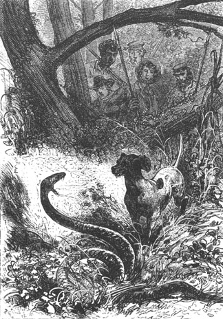
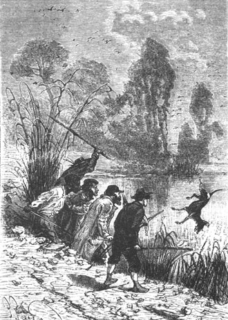

It was the 6th of May, a day which corresponds to the 6th of November in the countries of the northern hemisphere. The sky had been overcast for several days and it was important to make certain arrangements with a view to wintering. Nevertheless the temperature was not yet sensibly lower and a centigrade thermometer transported to Lincoln Island would still have marked an average of ten to twelve degrees above zero. This average is not surprising since Lincoln Island, very definitely situated between the 35th and 40th parallel, must find itself subject, in the southern hemisphere, to the same climatic conditions as Sicily or Greece in the northern hemisphere. But, like Greece or Sicily which suffer intensive frosts that produce snow and ice, Lincoln Island too would be subject doubtless, in the more pronounced periods of winter, to certain low temperatures against which it would be best to protect themselves.
In any case, if the frost did not yet menace them, the rainy season was approaching and on this isolated island, exposed to all the inclemencies of the vast Pacific Ocean, the bad weather would be frequent and probably terrible.
The question of a dwelling more comfortable than the Chimneys therefore had to be seriously considered and promptly resolved.
Pencroff naturally had some partiality for this retreat which he had discovered, but he well understood that it was necessary to look for another. Already the Chimneys had been visited by the sea under circumstances that we recall, and they could not expose themselves to a similar accident.
“Besides,” added Cyrus Smith, who on this day spoke of these things with his companions, “we have several precautions to take.”
“Why? The island is not inhabited,” said the reporter.
“That is probable,” replied the engineer, “although we have not yet explored it in its entirety, but if no human being is found, I fear that dangerous animals abound. It would thus be best to shelter ourselves against a possible aggression, and don’t forget that one of us must stay awake each night to keep up the fire. And thus, my friends, we must anticipate everything. We are here in a part of the Pacific that is often frequented by Malay pirates...”
“What,” said Herbert, “at this distance from all land?”
“Yes, my child,” replied the engineer. “These pirates are hardy sailors as well as formidable scoundrels and we will have to take measures in consequence.”
“Oh well,” replied Pencroff, “we will fortify ourselves against savages with two feet as well as four feet. But, Mister Cyrus, shouldn’t we explore all parts of the island before undertaking anything?”
“That would be best,” added Gideon Spilett. “Who knows if we will not find on the opposite shore one of those caverns that we are vainly looking for here.”
“That is true,” replied the engineer, “but you forget, my friends, that it would be best to establish ourselves in the neighborhood of a watercourse, and that from the summit of Mount Franklin we saw neither brook nor river toward the west. Here, on the contrary, we are situated between the Mercy and Lake Grant, a considerable advantage that we should not neglect. And moreover, this coast, oriented to the east, is not exposed as the other one is to the trade winds which blow from the northwest in this hemisphere.”
“Then, Mister Cyrus,” replied the sailor, “we will build a house on the borders of the lake. Neither bricks nor tools are lacking to us now. After having been brickmakers, potters, founders and blacksmiths, we will well know how to be masons, the devil!”
“Yes, my friend, but before making a decision we should go looking. A dwelling made at nature’s expense would save us a lot of work and would doubtless offer us a surer retreat because it could be better defended against enemies from inside as well as those from outside.”
“Quite so, Cyrus,” replied the reporter, “but we have already examined all of this massive granite on the coast and there is not a hole, not even a crack.”
“No, not one” added Pencroff. “Ah! If we could excavate a dwelling in this wall at a certain height in a way that puts us out of reach, how convenient that would be. I see it now, a facade that overlooks the sea, five or six rooms...”
“With windows to light them,” said Herbert laughing.
“And a staircase to climb to it,” added Neb.
“You laugh,” cried the sailor, “and why? Is what I propose impossible? Don’t we have the picks and pickaxes? Doesn’t Mister Cyrus know how to make the powder to explode a mine. Isn’t it true, Mister Cyrus, that you could make the powder for the day when we would need it?”
Cyrus Smith listened as the enthusiastic Pencroff developed his somewhat fantastic projects. To attack this mass of granite, even with a mine, was a herculean task, and it was unfortunately true that nature had not made a harder task. But the engineer only replied to the sailor by proposing to examine more carefully the wall from the mouth of the river up to the corner which terminated it in the north.
They then left and the exploration was made with extreme care over an extent of about two miles. But in no place could they see any cavity whatsoever in this wall which was smooth and straight. The nests of the rock pigeons which flew at its peak were in reality only holes bored in the crest itself and on the irregular edge cut from the granite.
It was an unfortunate circumstance and as to attacking this mass be it with a pick or with powder in order to make a sufficient excavation, they could not think of it. It was quite by chance that on this entire coast, Pencroff had discovered the only provisionally habitable shelter, that is to say the Chimneys, which they were nevertheless proceeding to abandon.
The exploration ended, the colonists then found themselves at the northern corner of the wall, where it terminated with elongated slopes that died out on the beach. From this neighborhood up to its extreme limit in the west, it formed only a sort of bank, a thick conglomeration of stones, soil and sand, bound together with plants, shrubs and grass inclined to an angle of forty five degrees. Here and there the granite still pierced through and stood out by sharp points from this sort of cliff. Clusters of trees spread out on its slopes and a rather thick grass carpeted it. But the vegetative effort did not go further and a long plain of sand, which began at the foot of the slope, extended up to the shore.
Cyrus Smith thought, not without reason, that there had to be an overflow of the lake on this side that would pour over in the form of a cascade. In fact it was necessary that the excess of water furnished by Red Creek should lose itself at some point. Now this point the engineer had not yet found at any portion of the shore already explored, that is to say from the mouth of the stream in the west up to Grand View Plateau.
The engineer then proposed to his companions that they climb the slope now in view and return to the Chimneys by the heights thereby exploring the northern and western banks of the lake.
The proposition was accepted and in several minutes Herbert and Neb had arrived at the upper plateau. Cyrus Smith, Gideon Spilett and Pencroff followed them more sedately.
Two hundred feet away, past the foliage, the beautiful sheet of water shone under the rays of the sun. The landscape in this neighborhood was charming. The trees, turning yellow, were wonderfully grouped as a feast for the eyes. Several large old trunks, battered by age, stood out by their blackish bark on the green carpet which covered the soil. A whole world of noisy cockatoos chattered away, veritable mobile prisms, who jumped from one branch to the next. One could say that light arrived only decomposed across this singular foliage.
The colonists, instead of going directly to the north shore of the lake, went around the edge of the plateau so as to reach the mouth of the creek on its left bank. It was a detour of a mile and a half at most. It was an easy walk because the widely spaced trees allowed an easy passage. They sensed that this was the limit of the fertile zone and the vegetation showed itself less vigorous here than in the entire area between the creek and the Mercy.
Cyrus Smith and his companions did not walk on this unknown soil without a certain caution. Bows, arrows, and sticks fitted with an iron point were their only weapons. However, no wild animals showed themselves and it was probable that these animals frequented more the thick forest of the south; but the colonists had the disagreeable surprise of seeing Top stop in front of a large serpent that measured fourteen to fifteen feet in length. Neb stunned it with his club. Cyrus Smith examined this reptile and declared that it was not venomous because it belonged to a species of diamond serpents native to New South Wales. But it was possible that others existed whose bite was mortal, such as the deaf viper with a forked tail that straightens out when stepped upon, or those winged serpents, provided with two ear flaps that permit them to move very rapidly. After the first moment of surprise passed, Top gave chase to these reptiles so obstinately that they feared for him. His master continually called him back.

Top stopped in front of a serpent.
The mouth of Red Creek, in the neighborhood of its entrance into the lake, was soon reached. The explorers recognized the opposite bank which they had visited on the descent from Mount Franklin. Cyrus Smith established that the flow of water from the creek was rather considerable; it was therefore necessary that somewhere nature had provided an outlet for the overflow of the lake. It was this outlet that he was trying to discover because doubtless it formed a falls which it would be possible to utilize for mechanical power.
The colonists were moving with a purpose but without separating much from each other. They began to go around the bank of the lake which was very steep. The waters seemed full of fish and Pencroff promised himself that he would make some fishing tackle in order to exploit this.
It was first necessary to double the sharp northeast point. One could suppose that the discharge of the waters was in this locality because the extremity of the lake was at the level of the edge of the plateau. But there was nothing there and the colonists continued to explore the bank which, after a slight curvature, became parallel to the shore.
On this side the bank was less wooded but some clusters of trees, scattered here and there, added to the picturesqueness of the landscape. Lake Grant appeared then in all its expanse with no wind rippling over the surface of its waters. Top, beating through the brushwood, drove out various flocks of birds which Gideon Spilett and Herbert greeted with their arrows. One of the birds was skillfully hit by the young lad and fell among the marshy grass. Top ran toward it and brought back a beautiful slate colored water fowl with a short beak, a very developed frontal area, toes broadened by a scalloped edge, and wings with a white border. It was a coot, the size of a large partridge, belonging to the group of macrodactyls which form the transition between the order of waders and that of palmipeds. In short, it was a sorry game and one with a taste leaving much to desire. But Top doubtless would show less difficulty than his masters and it was decided that the coot would serve as his supper.
The colonists then followed the east shore of the lake and they were not long in reaching the portion already familiar to them. The engineer was very surprised because he saw no indication of the discharge of the overflow of the water. The reporter and the sailor spoke with him and he could not conceal his astonishment from them.
At this moment Top, who had been very calm until then, gave signs of agitation. The intelligent animal went back and forth along the bank, stopped suddenly and looked at the water with a raised paw as if he had been on the alert for some invisible game; then he barked furiously, in a hunting mood so to speak, and was suddenly silent.
Neither Cyrus Smith nor his companions at first paid any attention to Top’s antics; but the dog’s barking soon became so frequent that the engineer became concerned.
“What’s there, Top?” he asked.
The dog, showing a real uneasiness, made several bounds toward his master and ran again toward the shore. Then he suddenly threw himself into the lake.
“Here Top,” cried Cyrus Smith, who did not want his dog to venture into the suspicious waters.
“What’s going on underneath there?” asked Pencroff, while examining the surface of the lake.
“Top has sensed some amphibian,” replied Herbert.
“An alligator, doubtless,” said the reporter.
“I do not think so,” replied Cyrus Smith. “Alligators are only met with in regions of lower latitude.”
Top however came back at his master’s call and regained the shore; but he was unable to remain still. He leaped around in the high grass and, with his instinct guiding him, he seemed to follow some invisible being which was gliding under the waters of the lake, following the shoreline. Nevertheless, the water was calm and no ripple disturbed the surface. Several times the colonists stopped on the shore and looked carefully. Nothing appeared. There was some mystery there.
The engineer was very intrigued.
“Let us pursue this exploration to its end,” he said.
A half hour later they all arrived at the southeast corner of the lake on Grand View Plateau. At this point their examination of the banks of the lake had to be considered as completed and yet the engineer had not been able to discover where and how the water was discharged.
“Nevertheless this opening exists,” he repeated, “and since it is not on the outside it must be hollowed out inside this mass of granite on the coast.”
“But what importance do you attach to knowing this, my dear Cyrus?” asked Gideon Spilett.
“A rather large one,” replied the engineer, “because if the opening is through this granite block, it is possible that we will find some cavity there which it will be easy to render habitable after having detoured the water.”
“But isn’t it possible, Mister Cyrus, that the water escapes through the bottom of this very lake,” said Herbert, “and that it goes to the sea by a subterranean passage?”
“That is, in fact, possible,” replied the engineer, “and if that is so we will be obliged to build our house by ourselves since nature has not done the preliminary construction work.”
The colonists were then getting ready to cross the plateau to get back to the Chimneys because it was five o’clock in the evening when Top gave new signs of agitation. He barked with rage and before his master could restrain him he threw himself a second time into the lake.
Everyone ran toward the shore. The dog was already more than twenty feet away and Cyrus Smith was sharply calling him when an enormous head emerged from the surface of the water which did not appear to be deep at this point.
Herbert recognized at once this species of amphibian which has a tapered head with large eyes and whose mustache is decorated with long silky hair.
“A manatee!” he cried.
It was not a manatee, but a specimen of this species of the order of cetaceans which carries the name of “dugong” because its nostrils are open at the upper part of its snout.
The enormous animal threw itself on the dog who vainly tried to escape him and return to the shore. His master could do nothing to save him, and even before it occurred to Gideon Spilett or to Herbert to arm their bows, Top, seized by the dugong, disappeared under the water.
Neb, his iron tipped spear in hand, wanted to help the dog by attacking the formidable animal in its own element.
“No, Neb,” said the engineer, restraining his courageous servant.
However an inexplicable battle was going on under the water. Under these conditions Top evidently could not resist. Judging from the bubbles on the surface, this was a terrible battle which could only end finally in the death of the dog. But suddenly in the middle of a circle of foam, Top reappeared. Thrown into the air by some unknown force, he rose ten feet above the surface of the lake, falling in the midst of the profoundly troubled water. He soon regained the shore without any deep wound, miraculously saved.

Top, thrown into the air...
Cyrus Smith and his companions looked on without understanding. There was yet another inexplicable circumstance. The battle was still continuing under the water. Doubtless the dugong, attacked by some powerful animal after having released the dog, was fighting on its own account.
But this did not last long. The water became red with blood and the body of the dugong emerged within a wide scarlet area, soon becoming stranded on a small beach on the southern corner of the lake.
The colonists ran toward this spot. The dugong was dead. It was an enormous animal, fifteen feet long, weighing three to four thousand pounds. There was a wound on its neck which seemed to have been made with a sharp blade.
What was this amphibian which had been able to destroy the formidable dugong with this terrible blow? No one could say and rather preoccupied with this incident, Cyrus Smith and his companions returned to the Chimneys.